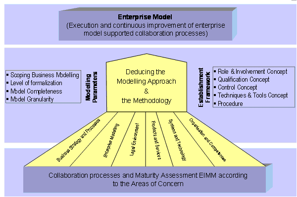
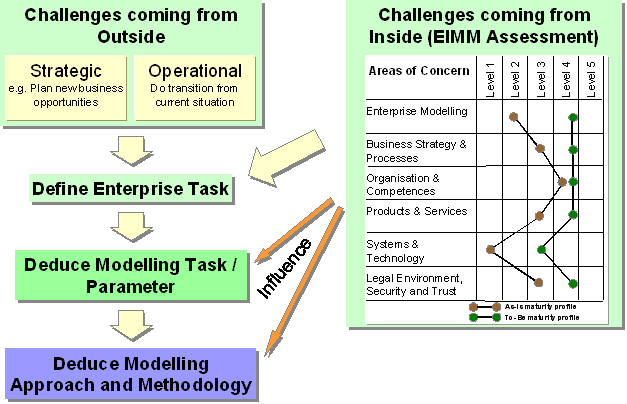

")

Collaborative enterprise modelling
Introduction
Enterprise models have the goal to reduce the complexity and give a representation of the structure, activities, processes, information, resources, people, behaviour, and goals of an enterprise and the dependencies between them. Especially for collaboration between enterprises enterprise models are helping to understand each other, to plan, implement and to support interaction.
Today, the user of enterprise models has to deal with several problems:
- First, too much time is needed to create a complete model, and, when finished, the developed model does not reflect the reality in a proper way anymore.
- Second, the models often don’t fit the users’ requirements, e.g. the model is not detailed enough or the level of formalization is not appropriate.
- Third, it is often not possible to use the modelling results to support the daily business of employees, because the users most of the time do not have the skills to read the models properly and to deduce the implications for their work.
Collaborative enterprises face additional problems when using the enterprise modelling and willing to interoperate seamlessly within a networked organisation. Enterprise modelling approach is different for each enterprise, depending on its current practices, systems, knowledge and culture.
Solution
The approach takes advantage of aspects of the Capability Maturity Model, already successfully applied to software engineering. They are applied for modelling of collaborative enterprises, in a safe and efficient mode, and independently from modelling methodologies or tools. Based on an enterprise Interoperability Maturity Model (EIMM) assessment, companies will be guided to choose the right concepts for improving their capabilities, by taking into account actual market and enterprise challenges. The approach will also be used for planning and implementing new enterprise concepts in short and mid term perspectives. Here the integration of today missing aspects like organisational capabilities and skills will allow an easier and more sustainable application of EM.
The solution is based on three concepts:
- Collaboration processes and Maturity Assessment as given in the Maturity Assessment above: The basis is given by the collaborative activities of the company (definition see in WD.A2.1.). In order to identify the correct project approach, the maturity assessment has to be performed. Using the maturity model for enterprise modelling that is described in the following section, the result of the first step is supposed to be the maturity level of the company for participating in a collaboration. The maturity level must focus on management issues as well as technological issues. Management must be aware that introducing collaborative EM technology will demand changes in their organization. It introduces an advanced form of knowledge management, and many new processes that must find responsible owners and groups of new and old categories of performers and participants.
-
Deducing the Modelling Approach and the Methodology: This step contains the procedure how to deduce an adequate modelling approach and methodology depending on:
- the enterprise task
- on the defined maturity level of the company
- the maturity level that is needed in order to participate to the collaboration process or to improve the collaboration processes.
In this part the modelling parameters have to be specified (e.g. the right level of granularity) as well as the support level of the Model Generated Workplace have to be determined.
- Modelling the Enterprise and Model Generated Workplace (MGWP) application: The result of this part is an enterprise model that follows from applying the specific modelling approach and methodology from previous part. Based on the defined model the MGWP can be generated (resp. configured). The MGWP is an application that provides a model based flexible front-end for supporting the daily business of people in different roles in the enterprise, according to the collaboration processes (e.g. operating a process or manage and control a process).

Figure: Deducing the modelling approach and the methodology
Application
To increase the efficiency and the effectiveness of the enterprise modelling, the modelling methodology must be derived systematically from the problem definition. In general the problem areas can be classified as follows:
- Challenges coming from outside
- Strategic (e.g. Plan new business opportunities)
- Operational (Do transition from current situation)
- Challenges coming from inside (EIMM Assessment)
An enterprise task is defined appropriate to these areas. This task gives requirements for the modelling. On the other hand, the general situation of the enterprise (EIMM Assessment) has a strong influence on the modelling. Both sources of impact must be considered for the definition of the modelling task. Besides, the modelling task is described with the help of the modelling parameters. The values of these parameters depend on the enterprise task as well as on the maturity of the enterprise. Afterwards based on the values of the modelling parameters and on the maturity of the enterprise the suited modelling approach for the establishment framework is customized. This procedure is represented in the figure below.

Figure: Deducing of modelling approach and methodology